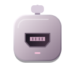

HDMI del dispositivo → capturadora → USB del ordenador.
Selecciona la capturadora y pulsa Conectar. El audio se selecciona en Ajustes.
F Pantalla completa Esc Salir M Silenciar
Si no hay imagen, cierra otras apps de captura y revisa los permisos de cámara de Windows. El contenido con HDCP puede no mostrar imagen.
P Imagen · R Grabar / detener · B Guardar repetición. Activa la repetición en Ajustes. Los clips incluyen el audio seleccionado, aunque silencies la escucha.